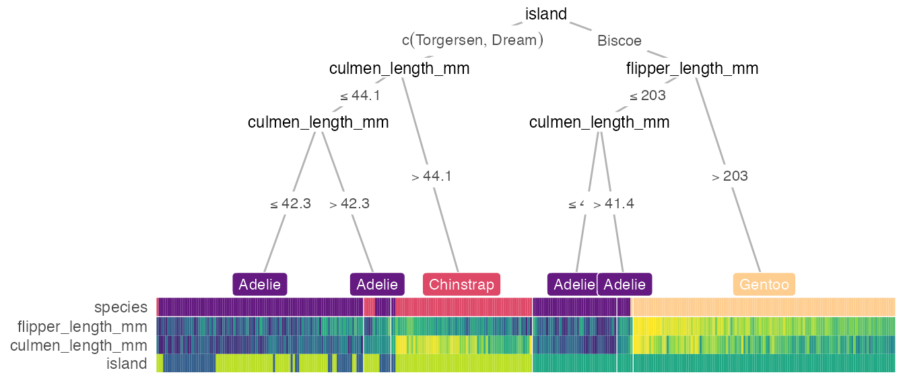
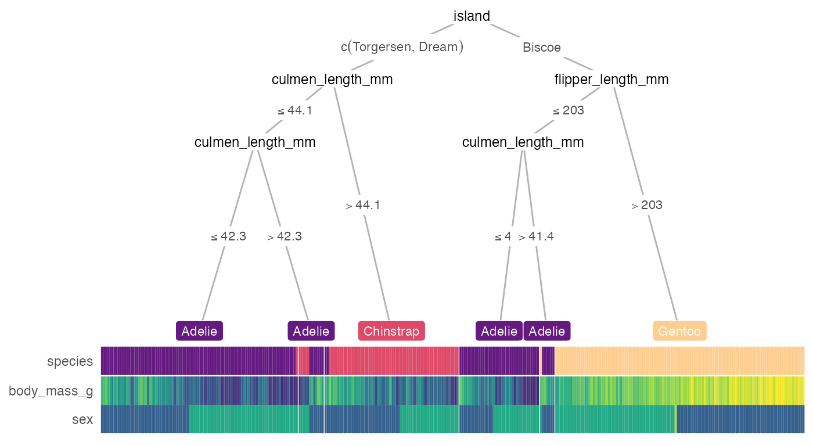
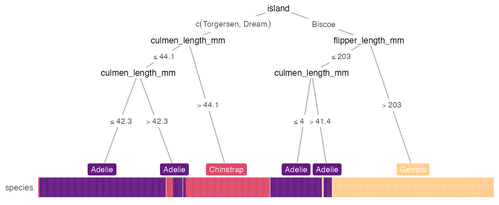
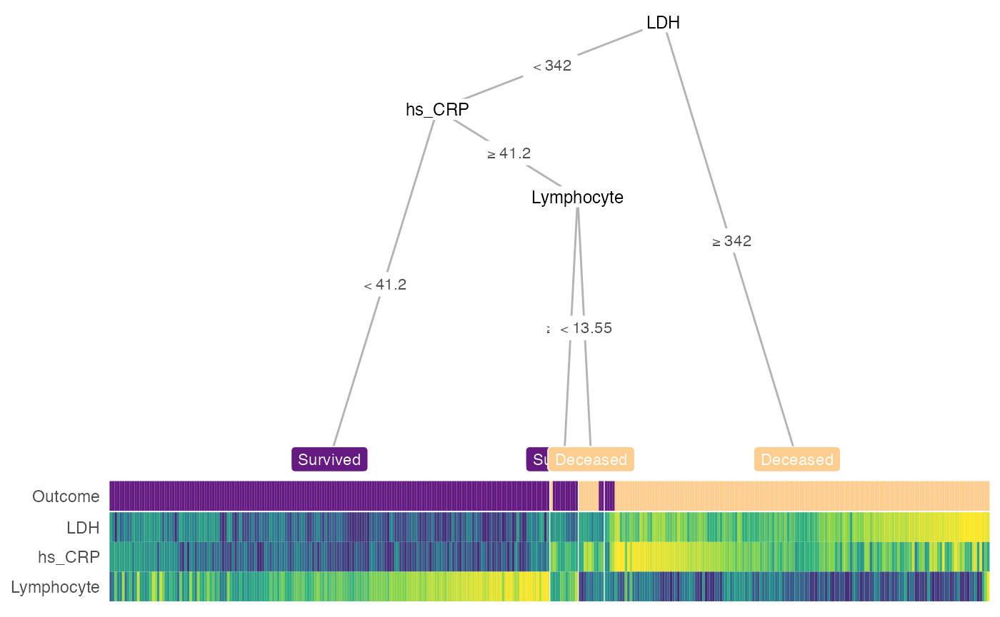
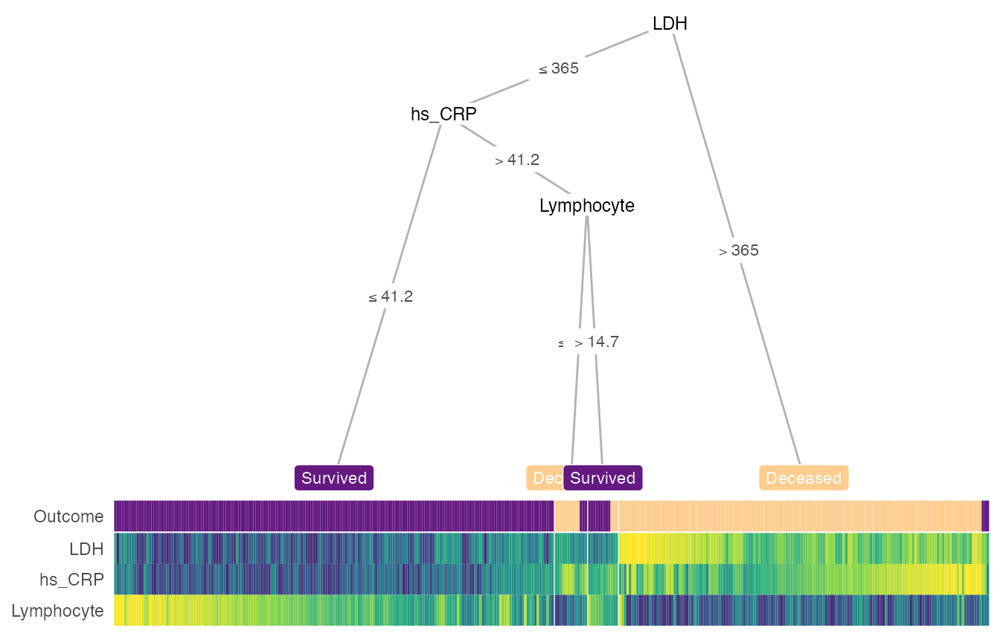
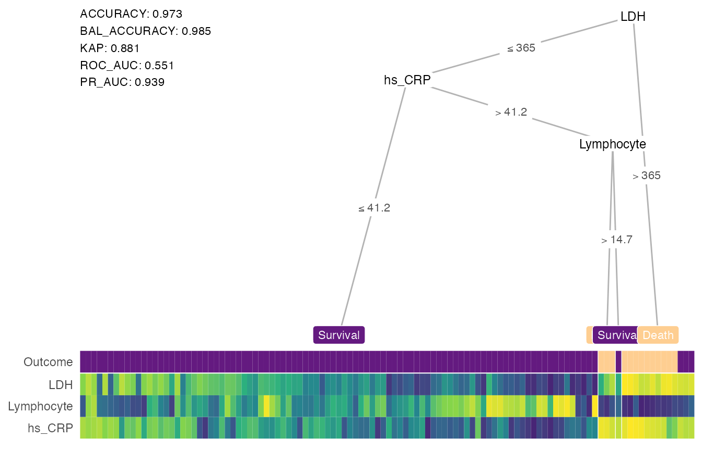
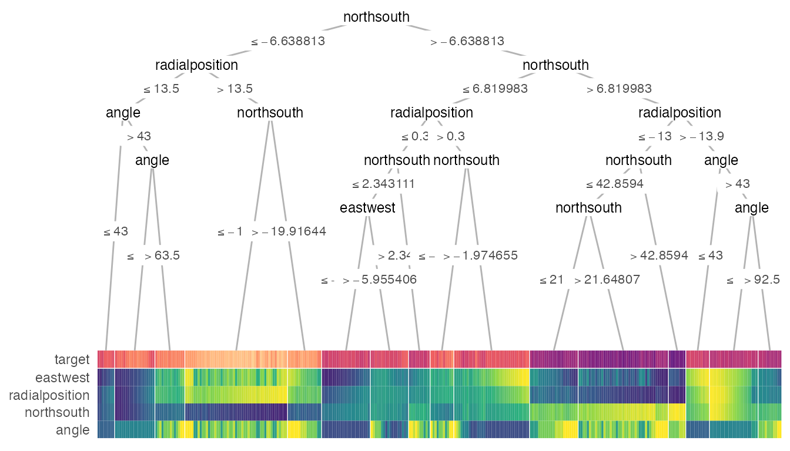
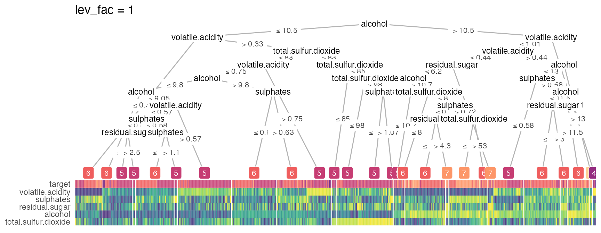
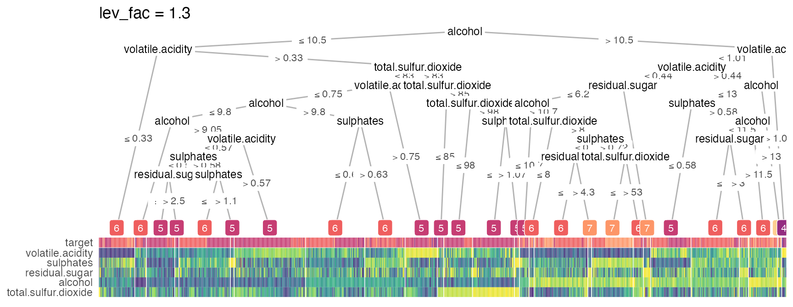

treeheatr displays a more interpretable decision tree visualization by integrating a heatmap at its terminal nodes. Let’s explore the package treeheatr a little deeper and see what it can do!
Let’s begin
with the penguins dataset! Running the heat_tree() function can be as simple as:
# To avoid warnings, for now, apply na.omit():
penguins <- na.omit(penguins)
heat_tree(penguins, target_lab = 'species')
But we can adjust a few graphical parameters. We can also add a custom layout for a subset of the nodes by specifying it in the custom_layout parameter. And we can relax the p value threshold p_thres to include more features that might be less important in classifying the samples but still included in the decision tree, or set show_all_feats = TRUE to include all features, even the ones that were not used to build the tree.
heat_tree(
penguins, target_lab = 'species',
target_cols = c('#E69F00', '#56B4E9', '#009E73'),
# moving node 3 a bit to the left:
custom_layout = data.frame(id = 3, x = 0.1, y = 0.5),
show_all_feats = TRUE,
panel_space = 0.05, target_space = 0.2, tree_space_bottom = 0.1, heat_rel_height = 0.4)
We can also customize our heattree by passing parameters through to different ggparty geoms. These list parameters are named *_vars. For example:
heat_tree(
penguins, target_lab = 'species',
par_node_vars = list(
label.size = 0.2,
label.padding = ggplot2::unit(0.1, 'lines'),
line_list = list(
ggplot2::aes(label = paste('Node', id)),
ggplot2::aes(label = splitvar),
ggplot2::aes(label = paste('p =', formatC(p.value, format = 'e', digits = 2)))),
line_gpar = list(
list(size = 8),
list(size = 8),
list(size = 6)),
id = 'inner'),
# terminal_vars = list(size = 0),
cont_legend = TRUE, cate_legend = TRUE,
edge_vars = list(size = 1, color = 'grey'))
What if we only want to show the decision tree? We can toggle this option using the show argument, which takes either 'heat-tree', 'heat-only' or 'tree-only'. For example:
heat_tree(penguins, target_lab = 'species', show = 'tree-only')
We can also choose to display other features in the heatmap that may not be in the tree.

feats = NA displays the tree with only the target label, which may be simple and still helpful:
heat_tree(penguins, target_lab = 'species', feats = NA, heat_rel_height = 0.1)
You’re the Warren Beatty of your heat_tree()
Anyone got that Food Wishes reference?
Pre-train your tree
If the default conditional tree is not desired, you can create your tree (e.g. with rpart) and wrap as.party() around this object to plug into heat_tree(). As an example, we will examine the datasets of COVID-19 cases in Wuhan from 2020-01-10 to 2020-02-18 from a recent study.
# # same tree as letting `x = train_covid`:
# x <- partykit::ctree(Outcome ~ ., data = train_covid)
# build tree using rpart:
x <- partykit::as.party(rpart::rpart(Outcome ~ ., data = train_covid))
heat_tree(x = x, label_map = c(`1` = 'Deceased', `0` = 'Survived'))
Manually define your tree with partysplit and partynode
You can also manually define your own tree for the custom_tree argument following the partykit vignette. Let’s apply the tree structure in Figure 2 of the original study (only show the training set for now):
library(partykit)
# first argument indicates the index of the feature used for splitting
split_ldh <- partysplit(1L, breaks = 365)
split_crp <- partysplit(2L, breaks = 41.2)
split_lymp <- partysplit(3L, breaks = 14.7)
custom_tree <- partynode(1L, split = split_ldh , kids = list(
partynode(2L, split = split_crp, kids = list(
partynode(3L, info = 'Survival'),
partynode(4L, split = split_lymp, kids = list(
partynode(5L, info = 'Death'),
partynode(6L, info = 'Survival'))))),
partynode(7L, info = 'Death')))
heat_tree(
x = custom_tree,
data_test = train_covid,
print_eval = FALSE,
target_lab = 'Outcome',
label_map = c(`1` = 'Deceased', `0` = 'Survived'))
Apply the learned tree on external/holdout/test/validation dataset
You can print measures evaluating the conditional decision tree’s performance by setting print_eval = TRUE. By defaults, we show 5 measures for classification tasks:
- Accuracy
- Balanced accuracy (BAL_ACCURACY)
- Kappa coefficient (KAP)
- Area under the receiver operating characteristics curve (ROC_AUC)
- Area under the precision recall curve (PR_AUC)
and 4 measures for regression tasks:
- R-squared (RSQ)
- Mean absolute error (MAE)
- Root mean squared error (RMSE)
- Concordance correlation coefficient (CCC).
You can also choose to show performance based on any other set of appropriate metrics listed on the yardstick reference page, for example, with
metrics = yardstick::metric_set(yardstick::f_meas)as a heat_tree argument to show the F score (a combination of precision and recall).
Warning: We do not recommend print_eval on the training set because these measures may gives you an over-optimistic view of how the tree performs (this would show pure training accuracy, not cross-validated).
Let’s now apply the custom tree we (or really, Yan et al.) designed earlier and see how it performs on the test set:
heat_tree(
x = custom_tree,
data_test = test_covid,
target_lab = 'Outcome',
label_map = c(`1` = 'Death', `0` = 'Survival'),
lev_fac = 3)
Regression
In general, compared to classification, regression task is more difficult to interpret with a decision tree. However, a heatmap may shed some light on how the tree groups the samples in different terminal nodes. Also, removing the terminal node label may show the groups better. Here’s an example:
heat_tree(x = galaxy,
target_lab = 'target',
task = 'regression',
terminal_vars = NULL,
tree_space_bottom = 0)
Smart node layout
These extreme visualizations may not be very interpretable but serves the purpose of showing the ability to generalize of the node layout when the tree grows in size. The implemented smart layout weighs the x-position of the parent node according to the level of the child nodes as to avoid crossing of tree branches. This relative weight can be adjusted with the lev_fac parameter in heat_tree(). The default lev_fac = 1.3 seems to provide aesthetically pleasing trees, independent of the tree size.
In this next figure, on the top, lev_fac = 1 makes parent node perfectly in the middle of child nodes (note a few branch crossing), which contrasts lev_fac = 1.3 (default) on the bottom.
heat_tree(wine_quality_red, target_lab = 'target', lev_fac = 1, title = 'lev_fac = 1')
heat_tree(wine_quality_red, target_lab = 'target', title = 'lev_fac = 1.3')
Seriation
Unless you turn it off (clust_feats = FALSE, clust_samps = FALSE), treeheatr automatically performs grouping of features and samples when organizing the heatmap. Features are ordered within each of the two groups of features, continuous and categorical (including the target label, unless clust_target = FALSE). Samples are grouped within each terminal node of all features (not only the displayed features). treeheatr uses cluster::daisy() to compute distances with the Gower metric to incorporate both continuous and nominal categorical feature types. Now, cluster::daisy() may throw this warning if your dataset contains binary features:
binary variable(s) treated as interval scaled
but in general this is safe to ignore because the goal of seriation is to simply reduce the amount of stochasticity of the tree-based model and not to make precise inference about each group.
Mixed data/feature types
As shown above in the penguins example, treeheatr supports mixed feature types.
For continuous variables/features, we can choose to either percentize (scale-rank), normalize (subtract the min and divide by the max) or scale (subtract the mean and divide by the standard deviation) each feature. Depending on what we want to show in the heatmap, one transformation method can be more effective than the other. Details on the strengths and weaknesses of different types of data transformation for heatmap display can be found in this vignette of the heatmaply package.
We highly recommend that, when dealing with mixed feature types, the user supply feat_types to indicate whether a feature should be considered ‘numeric’ (continuous) or ‘factor’ (categorical) as shown below. When feat_types is not specified, treeheatr automatically inferred each column type from the original dataset.